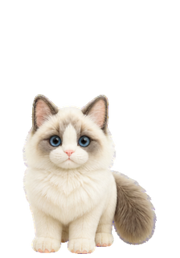

아무 · 란 — 교복 대기 v2
밝은 / 어두운 배경
캐릭터만 보기
처음부터
새 교복 대기 · 실제 크기

원본 레토 · 체형 기준
하나 · 동작과 재질 참고
몸 전체를 그린 넥타이 정리 동작 · 고양이 3.2초 주기
원본 얼굴 폭 · 몸 높이 · 지지 앞발 확인
앱 적용 전 검토본
 하나 · 동작과 재질 참고
몸 전체를 그린 넥타이 정리 동작 · 고양이 3.2초 주기
하나 · 동작과 재질 참고
몸 전체를 그린 넥타이 정리 동작 · 고양이 3.2초 주기